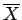
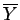

Inhalt Index DeskTop Bronstein

 Funktionen und ihre Darstellung Aufstellung empirischer Kurven Verfahrensweise Parameterbestimmung
Funktionen und ihre Darstellung Aufstellung empirischer Kurven Verfahrensweise Parameterbestimmung


Bei der Mittelwertmethode wird die lineare Abhängigkeit der ,,rektifizierten`` Variablen X,Y, d.h. Y = AX+B wie folgt ausgenutzt:
Die Bedingungsgleichungen Yi = AXi+B für die vorliegenden Wertepaare Yi, Xi werden in zwei gleich große bzw. nahezu gleich große Gruppen eingeteilt und nach zunehmenden Werten Yi oder Xi geordnet. Durch Addition der Gleichungen jeder der beiden Gruppen ergeben sich zwei Gleichungen, aus denen A,B bestimmt werden können. Wenn nun X,Y wieder durch die Ausgangsvariablen x,y ausgedrückt werden, dann ist die gesuchte Abhängigkeit zwischen x und y gefunden.
Sollten noch nicht alle Parameter bestimmt worden sein, dann ist die Mittelwertmethode erneut anzuwenden, wobei jetzt die Rektifizierung mit anderen Größen  und  durchzuführen ist (s. Beispiel).
Rektifizierung und Mittelwertmethode werden vor allem dann angewendet, wenn in der Näherungsformel gewisse Parameter nichtlinear auftreten, wie z.B. in den Formeln (2.256b, 2.256c).